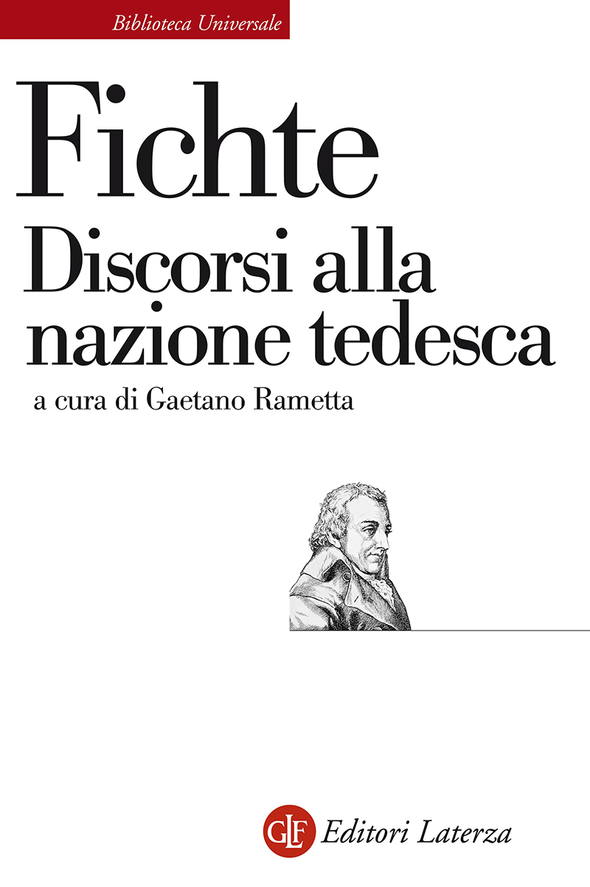
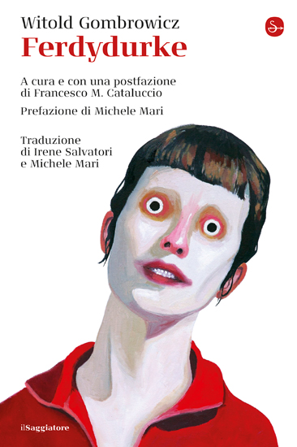
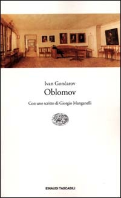

30:46 · 11 OPERE
Dove vengono forgiati i concetti dell'individuo contemporaneo?
Il filo del discorso
Chi produce i concetti attraverso cui una persona interpreta se stessa e il mondo? Dr Divago sostiene che l’autonomia intellettuale venga progressivamente sostituita da parole e categorie ricevute dai centri di potere e dall’informazione. La tesi è proposta come conclusione di un percorso culturale: Fichte, Rousseau, Marx, Stirner e Dostoevskij introducono il problema della distanza dell’individuo da sé.
Leggi la sintesi completaRiduci la sintesi
Il centro letterario è Gombrowicz, soprattutto l’immaturità di Ferdydurke e le riflessioni del Diario, accostate al protagonista di Oblomov. La conservazione dei testi è poi rappresentata attraverso Fahrenheit 451 e la metafora del messaggio nella bottiglia. Con Understanding Media il discorso si sposta sugli effetti del mezzo di comunicazione e sull’implosione della società; Eco e Zolla diventano termini di una controversia sul giudizio della modernità. Il richiamo a Keynes conduce infine al valore delle alternative storiche e alla critica degli slogan che interrompono il ragionamento. Le applicazioni alla pandemia e le gerarchie fra civiltà nella chiusa sono valutazioni del relatore, non risultati dimostrati dalla scheda.
I libri nel discorso

Discorsi alla nazione tedesca
Note sul riferimento
Copertina: Laterza, Biblioteca Universale Laterza, traduzione e cura di Gaetano Rametta; ISBN della ristampa cartacea 9788858118283.
Immagine autentica dell’opera, controllata visivamente; l’edizione di riferimento non è attribuita al filmato.
Fichte e il discorso alla nazione tedesca esplicitamente nominati; titolo bibliografico normalizzato al plurale.

L’unico e la sua proprietà
Identificazione probabile
Note sul riferimento
Copertina: Adelphi, Biblioteca 91, 1979; traduzione di Leonardo Amoroso
Copertina dell’edizione Biblioteca Adelphi 91, con un saggio di Roberto Calasso. Edizione scelta come riferimento iconografico; nessuna edizione è confermata nel video.
Stirner e il ritorno al sé dell’unico; titolo dell’opera non pronunciato, rimando probabile.

Memorie del sottosuolo
Note sul riferimento
Copertina: Theoria · Futuro Anteriore, 2022 · edizione di riferimento
Memorie del sottosuolo e Dostoevskij esplicitamente richiamati.

Diario
Note sul riferimento
Copertina: Il Saggiatore, volume unico di 928 pagine; traduzione Vera Verdiani, cura e introduzione Francesco M. Cataluccio.
Immagine autentica dell’opera, controllata visivamente; l’edizione di riferimento non è attribuita al filmato.
Gombrowicz e i diari esplicitamente nominati, con una riflessione sull’ambiente culturale parafrasata.

Ferdydurke
Note sul riferimento
Copertina: Il Saggiatore, 2020; traduzione Irene Salvatori e Michele Mari, cura e postfazione Francesco M. Cataluccio.
Immagine autentica dell’opera, controllata visivamente; l’edizione di riferimento non è attribuita al filmato.
Ferdydurke, data 1937 e protagonista discusso, titolo deformato ma riconoscibile nella trascrizione automatica.

Oblomov
Note sul riferimento
Copertina: Einaudi · 2000
Copertina autentica controllata visivamente. Edizione di riferimento; non identifica l’esemplare usato o citato nel video.
Oblomov e Gončarov esplicitamente nominati.

Fahrenheit 451
Note sul riferimento
Copertina: Edizione inglese Simon & Schuster, ISBN 9781451673265; immagine editoriale con dicitura 60th Anniversary Edition.
Immagine autentica fornita dall’editore per ISBN 9781451673265, con grafica del sessantesimo anniversario. La scheda commerciale riporta 10 gennaio 2012; tale data non viene usata per retrodatare la grafica anniversario né confusa con la prima pubblicazione del romanzo nel 1953. Nessuna edizione mostrata dal relatore è qui identificata.
Ray Bradbury e Fahrenheit 451 esplicitamente richiamati, titolo deformato dalla trascrizione automatica.

Gli strumenti del comunicare (Understanding Media)
Note sul riferimento
Copertina: Il Saggiatore, 2023, traduzione di Ettore Capriolo; opera originale del 1964.
Immagine autentica dell’opera, controllata visivamente; l’edizione di riferimento non è attribuita al filmato.
Marshall McLuhan, Understanding Media e lettura dell’apertura.

La Repubblica
Identificazione probabile
Note sul riferimento
Copertina: Laterza · La Repubblica · edizione con testo a fronte di riferimento
Immagine associata all’ISBN di riferimento e controllata visivamente; edizione e traduzione non identificate come quelle citate o lette nel video.
La caverna platonica applicata al telefonino, titolo del dialogo non pronunciato.

Apocalittici e integrati
Note sul riferimento
Copertina: La nave di Teseo, I delfini, 2025; opera originariamente pubblicata nel 1964.
Immagine autentica dell’opera, controllata visivamente; l’edizione di riferimento non è attribuita al filmato.
Eco e Apocalittici e integrati esplicitamente nominati.

Le conseguenze economiche della pace
Note sul riferimento
Copertina: Adelphi · L’oceano delle storie · 2007 · traduzione di Franco Salvatorelli
Immagine autentica dell’opera, controllata visivamente; l’edizione di riferimento non è attribuita al filmato.
Keynes e Le conseguenze economiche della pace, con riferimento al 1919.